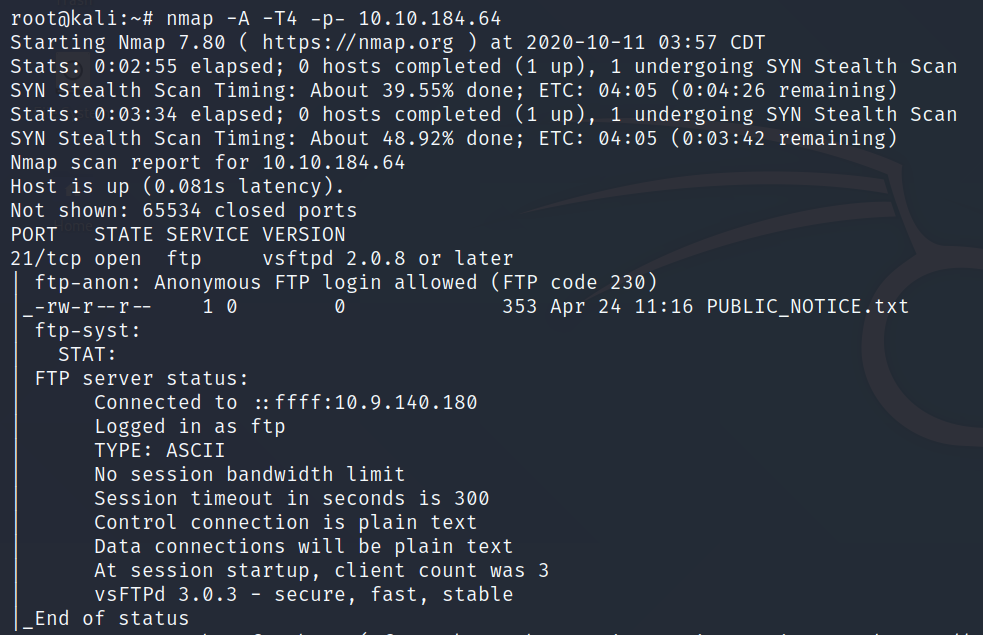

2020/10/11
- File Transfer Protocol (FTP): protocol used to allow remote transfer of files
over a network
-
- It uses a client-server model to do this, and- as we'll come on to later- relays
commands and data in a very efficient way
- A typical FTP session operates using two channels:
-
- a command (sometimes called the control) channel
- a data channel
- FTP operates using a client-server protocol
-
- The client initiates a connection with the server, the server validates whatever login
credentials are provided and then opens the session
- While the session is open, the client may execute FTP commands on the server
- In an Active FTP connection, the client opens a port and listens. The server is
required to actively connect to it.
- In a Passive FTP connection, the server opens a port and listens (passively) and the
client connects to it.
- We're going to be exploiting an anonymous FTP login, to see what files we can access- and if
they contain any information that might allow us to pop a shell on the system
- Some vulnerable versions of in.ftpd and some other FTP server variants return different
responses to the "cwd" command for home directories which exist and those that don’t
-
- This can be exploited because you can issue cwd commands before authentication, and if
there's a home directory- there is more than likely a user account to go with it
- https://www.exploit-db.com/exploits/20745
- 


- With data from FTP being sent in plaintext, if a man-in-the-middle attack took place an attacker
could reveal anything sent through this protocol (such as passwords)

- . . .